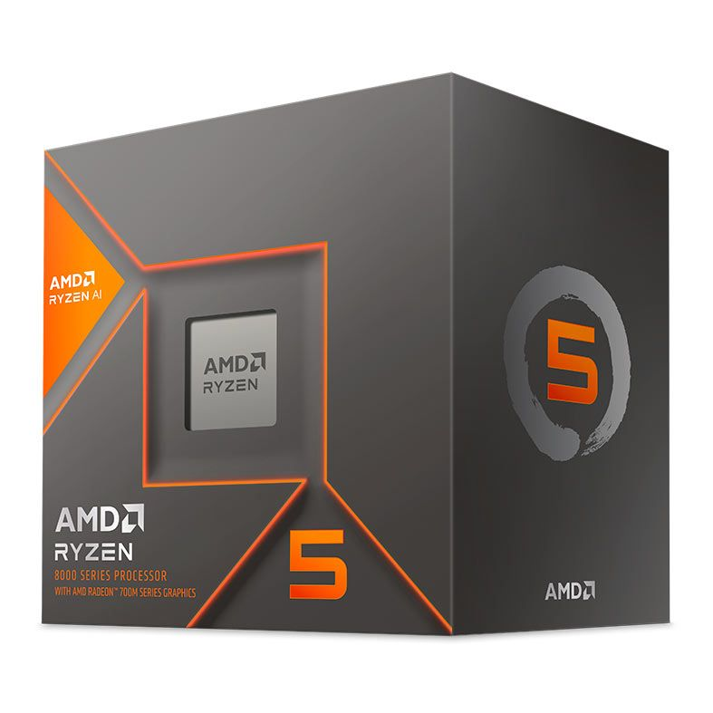
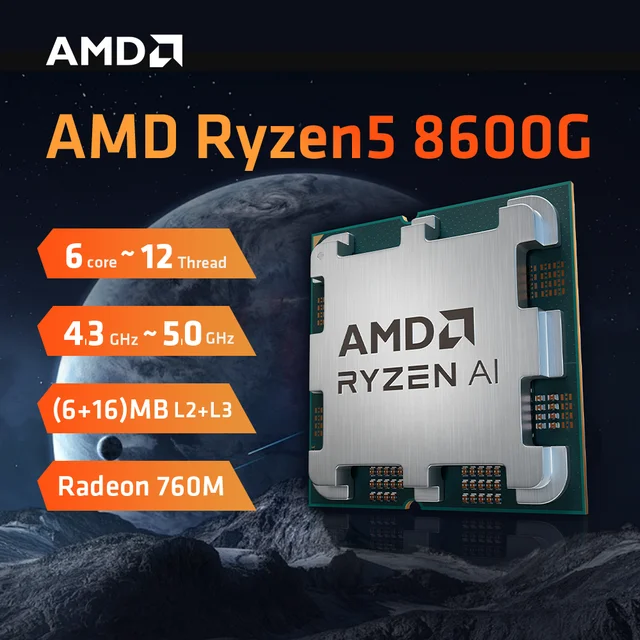
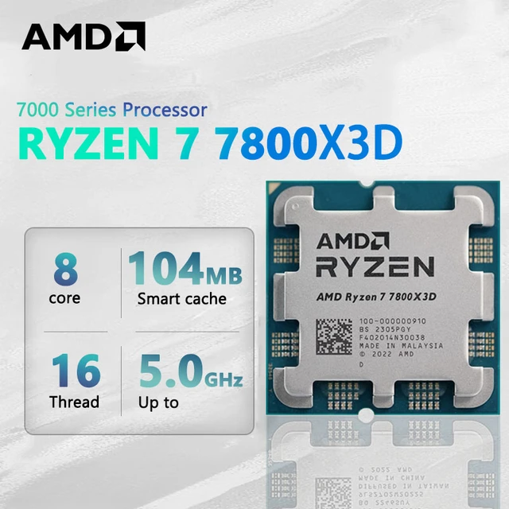
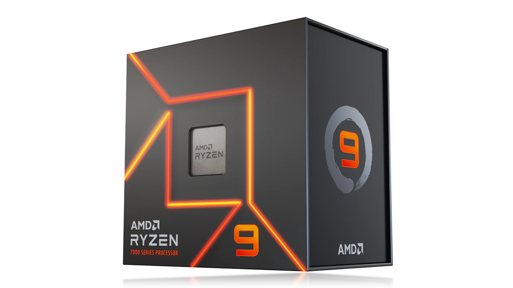
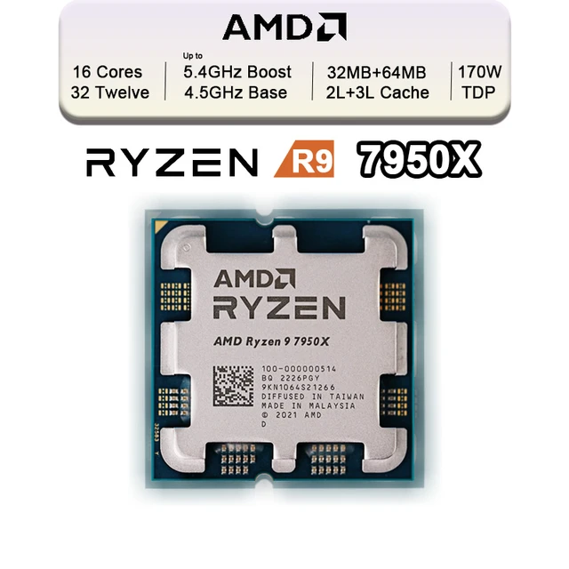

Conheça os processadores com o maior potencial de longividade do mercado.
RYZEN 5 8600G

ESPECIFICAÇÕES:


ESPECIFICAÇÕES:


ESPECIFICAÇÕES:

Caso queira comparações mais detalhadas,em outras aplicações,e com outros CPUs, tenha mais informações neste link:
TECHSPOT
O Ryzen 7 5800x3d Foi lançado no dia 20/04/2022 custando 450 dólares, enquanto o CORE I9 12900K; por 600 dólares, ou seja, mais performace custando 150 dólares mais barato!
Em 2023,no Brasil, os preços deram uma queda: o Core I9 12900K pode ser encontrado na faxa dos R$3100,00 ou mais enquanto o Ryzen 7 5800x3d está em promoção na faxa de R$2200,00 ou menos.
Se você já é um usuário da plataforma AM4, você pode encontrar o seu próximo upgrade,o Ryzen 7 5800x3d, por R$1988,99 na:
LOJA DA PICHAU